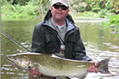

Indoor Fly Casting
The fly casting program for this season will begin on Wednesday February 27th and will continue ..
Southern Ontario is rich with both native and non-native species and is a Mecca for both conventional anglers and fly fishers alike. The lakes and reservoirs are home to just about any game fish that you can name in the Canadian east and the availability for the average anglers is far better than many believe. (No expensive fly in’s or long drives on goat trails unfit for goats.)
As a fly fishing outfitter, there are few species that we can’t target, but our bailiwick is the cold water haunts between Lake Erie and Georgian Bay. Steelhead, browns, rainbow and smallmouth bass headline the list, but we have the resources to extend to just about anything in south central and Southern Ontario, including the great muskellunge.
Our season begins when the rivers settle after the spring run off. Typically, the first week in April will mark the start, but we have had several years when it all begins in March, a full 4 to 6 weeks before the general trout season! As the seasons change, so too do the fish that we target until December finds us braving the cold for those last few steelhead of the year. No matter your preference, Grindstone Outfitters can provide top quality guidance and second-to-none service.
Ontario salmon season typically starts after the first big rain in mid-September brings the fish into the rivers. The season is roughly a month long and chinook over 20 pounds are common; many of our anglers land chinook over 30 pounds. We also target coho and pink salmon. For anglers interested in Atlantic salmon, we travel to St. Mary’s River in Sault St. Marie. Read more about our Ontario salmon history and fishery.
At Grindstone, we’re steelhead fanatics. Just ask our families! This species occupies more than half of our season and we love putting clients onto these spectacular fish. The time we spend scouting, tying, and interpreting conditions all contribute to our success on the water and keeps our clients coming back, year after year. Read more about our Ontario steelhead fishery.
Some of North America’s best smallmouth bass fishing is found in south central Ontario. If you are after a trophy smallmouth bass, Grindstone has the best guides in the province. Read more about Ontario trophy smallmouth bass
The rivers and streams of south central Ontario are filled with wild populations of brook trout, rainbows and browns. Whether your preferred trout strategy is splashing streamers, fishing dries or working the smaller streams, Grindstone can help you experience all of it. Read more about Ontario trout.
Contact us today to inquire about a guided trip on any of the great rivers in Ontario. You can call the shop at 905-689-0880 or using our guide trip inquiry form below. You can find out more about our services on our Ontario Fishing Guide Service page.

The fly casting program for this season will begin on Wednesday February 27th and will continue ..
Fall is moving in quick and along with the cooler weather Steelhead, Salmon and Browns are movin..